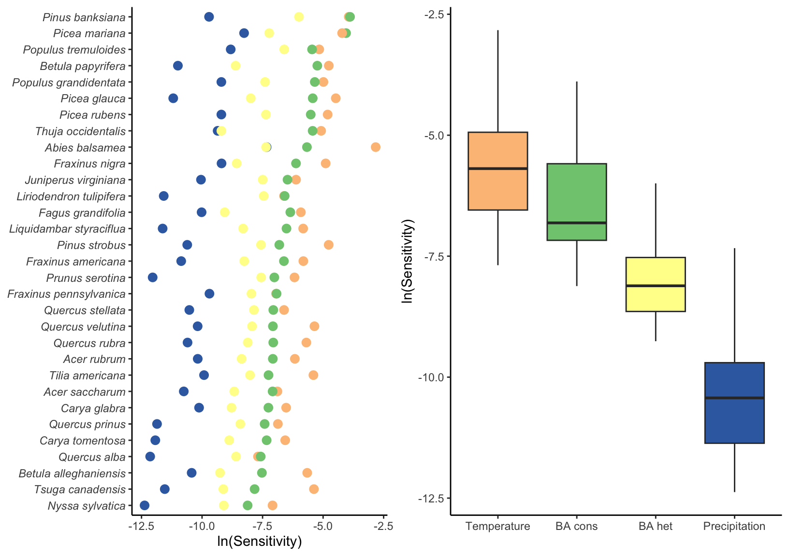
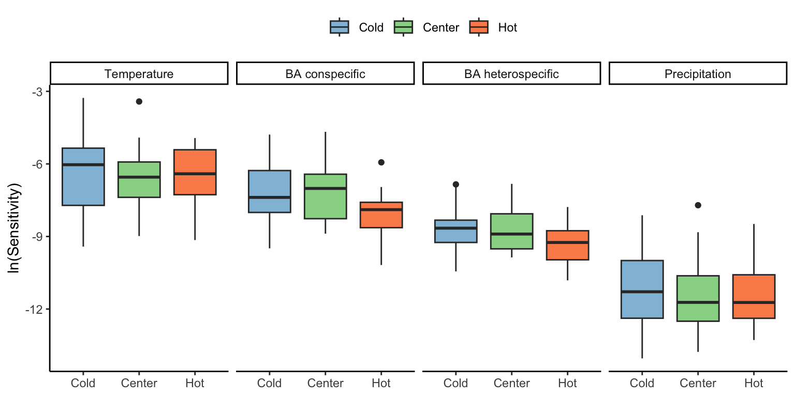
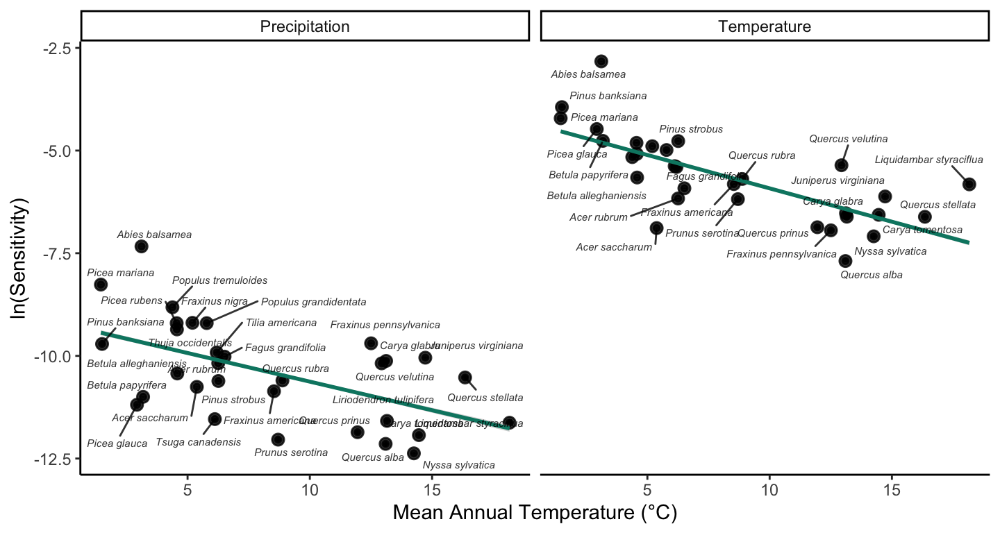
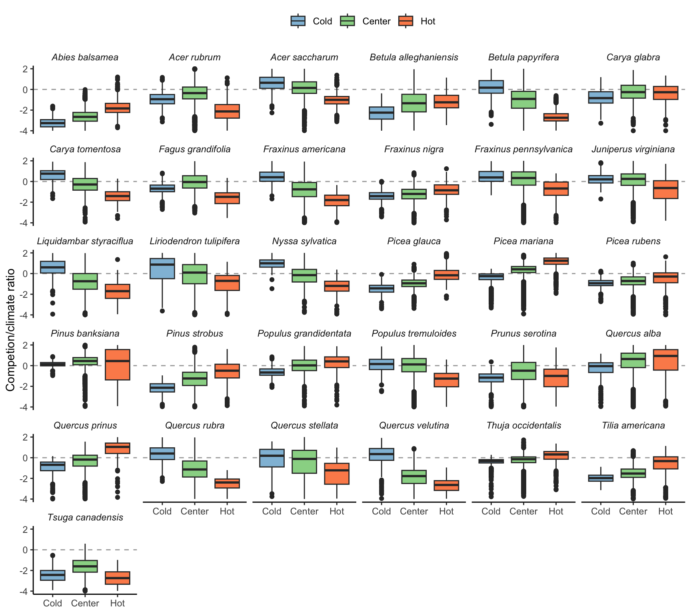
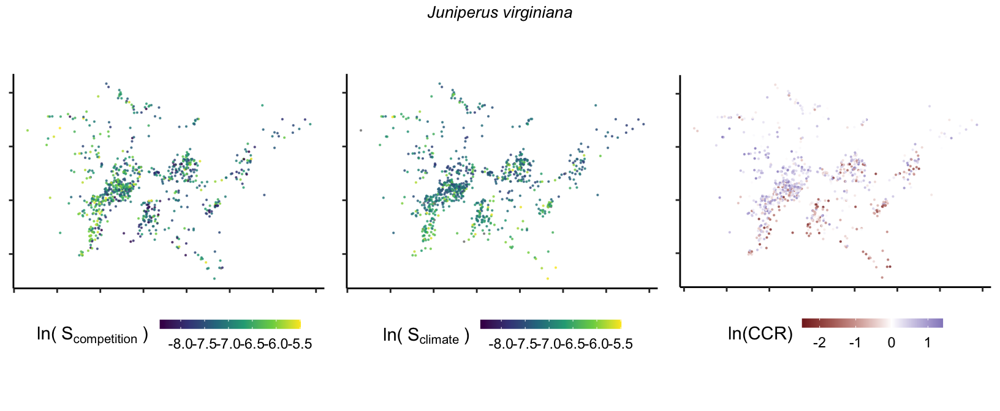
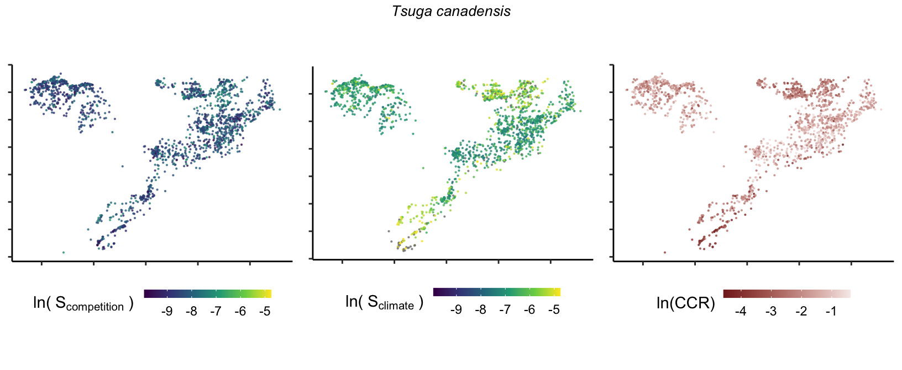
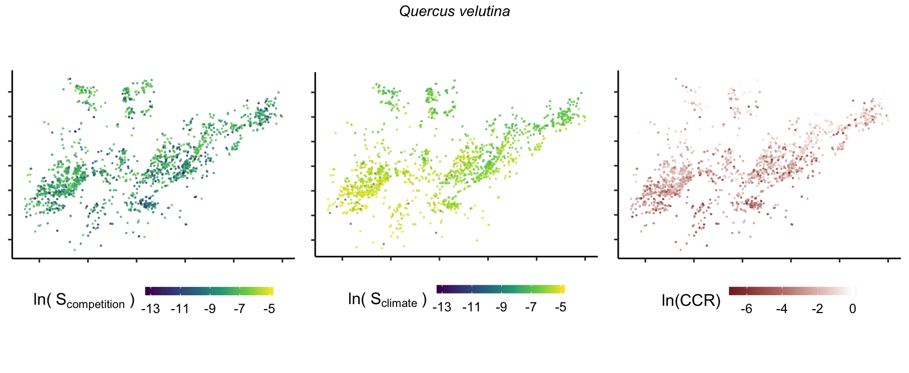
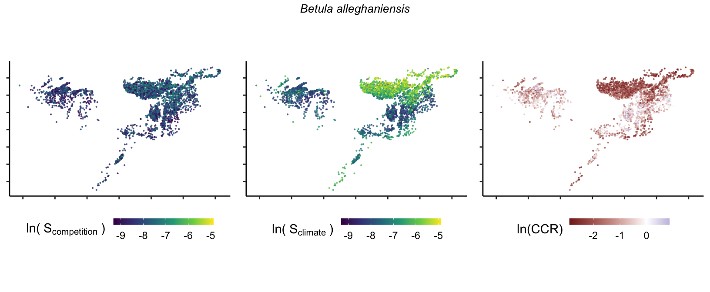
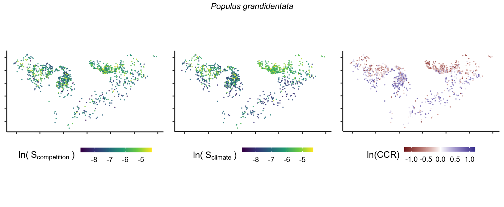
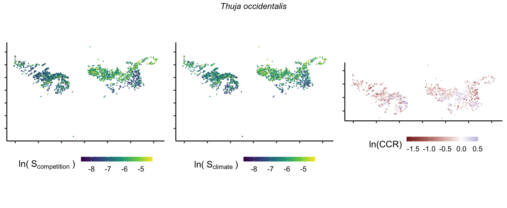

18 Marginal effect of covariates
This chapter assesses the marginal effects or sensitivity of the population growth rate (\(\lambda\)) to competition and climate conditions. We aim to understand how this response changes across each species’ temperature (or latitude) range distribution. We define sensitivity as the partial derivative of \(\lambda\) with respect to a covariate \(X\), which can take the form of conspecific or heterospecific density-dependence competition and temperature or precipitation climate conditions. In practice, we quantify sensitivity by slightly increasing each covariate value \(X_i\) to \(X_i'\) and computing the change in \(\lambda\) following the right-hand part of Equation 18.1.
\[ \frac{\partial \lambda_i}{\partial X_i} \approx \frac{\Delta \lambda_i}{\Delta X_i} = \frac{|f(X_i') - f(X_i)|}{X_i' - X_i} \tag{18.1}\]
We perform this process for each species across all plot-year observations \(i\) to gauge the sensitivity of \(\lambda\) that is proportional to the conditions experienced by the species. We set the perturbation size to a 1% increase in the normalized scale for each covariate. For instance, a 1% increase translates to a rise of 0.3°C for Mean Annual Temperature (MAT) and 26 mm for Mean Annual Precipitation (MAP). Because the competition metric is computed at the individual level, the perturbation was applied at each individual, where a 1% increase corresponds to a rise of 1.2 cm in dbh. As we were interested in the absolute difference, the resulting sensitivity value ranges between 0 and infinity, with lower values indicating a lower sensitivity of \(\lambda\) to the specific covariate.
We further computed the log ratio between competition and climate (\(CCR\)) sensitivities to discern their relative effects as follows:
\[ \begin{align*} &S_{comp, i} = \frac{\partial \lambda_i}{\partial BA_{cons, i}} + \frac{\partial \lambda_i}{\partial BA_{het, i}}\\ &S_{clim, i} = \frac{\partial \lambda_i}{\partial MAT_{i}} + \frac{\partial \lambda_i}{\partial MAP_{i}}\\ &CCR_i = \text{ln} \frac{S_{comp, i}}{S_{clim, i}} \end{align*} \tag{18.2}\]
Here, \(S\) represents the total sensitivity to competition or climate. Negative \(CCR\) values indicate higher sensitivity of \(\lambda\) to climate, while positive values suggest the opposite. The code used to perform these analysis are hosted at the forest-IPM GitHub repository.
Results
In Figure 18.1, we show the sensitivity of each species’ population growth rate to conspecific and heterospecific competition, temperature, and precipitation. Among all species, \(\lambda\) is more sensitive to temperature, followed by conspecific and heterospecific competition.

To test how the sensitivity to each covariate changed across the species range, we classified each plot into cold, center, or hot temperature ranges based on MAT. Cold range plots had MAT below the 10th MAT quantile, while hot range plots had temperatures higher than the 90th MAT quantile. Everything in between was classified as a center plot. We describe the sensitivity of \(\lambda\) among all species grouped by each of the four covariates in Figure 18.2. There were no significant differences in \(\lambda\) sensitivity among these ranges within each covariate.

We then merged conspecific with heterospecific competition and temperature with precipitation to assess the relative sensitivity between competition and climate following Equation 18.2. The predominance of climate over competition was present in all three range positions, although \(\lambda\) was more sensitive to competition in the cold range compared to the hot range (Figure 18.3).

When analyzing the sensitivity at the species level, we observed higher temperature and precipitation sensitivity for species at the cold temperature ranges (Figure 18.4). This result indicates variability in \(\lambda\) sensitivity with respect to their position in the temperature range.

In Figure 18.5, we analyze how the sensitivity to competition and climate and their ratio change across the temperature range. We can observe considerable variability among the species. Overall, species have lower sensitivity to competition compared to climate, and sensitivity to competition seems to be more stable across the temperature range compared to climate sensitivity.
Although we could not see much difference in the sensitivity to each covariate across the cold, center, and hot range among all species together (Figure 18.2), when analyzing each species individually, there are significant changes in the sensitivity ratio between competition and climate across the temperature range (Figure 18.6).

Given the sensitivity to competition and climate as functions of the range position changes among the species (Figure 18.6), we extend Figure 18.2 by adding the position of each species on the temperature range to answer the question on how the sensitivity to each covariate changes across the species range. For that, we calculated the median of MAT for each species for all plots within the cold, center, and hot ranges. This allowed us to account for the difference in range position between the species to avoid comparing, for instance, the cold range of a boreal species with the cold range of a temperature one. Overall, for the species and range classes, the sensitivity of \(\lambda\) to climate was higher than to the competition covariates (Figure 18.7). Except for sensitivity to climate at the hot range, all the other groups followed the pattern of increase in sensitivity as the species’ range position was located towards the colder mean annual temperatures. At the hot range of the species, the sensitivity to competition decreased towards hotter temperatures, while the climate sensitivity remained constant across the range of MAT. At the cold range of the species, the sensitivity to both competition and climate increased towards colder temperatures, with a higher increase rate for the climate than competition. Finally, at the center, the sensitivity to climate and competition increased towards colder temperatures, but there was no clear distinction between the two covariates.
To quantify the sensitivity difference between competition and climate, we analyze how the \(ln(CCR)\) for the cold, center, and hot range changes across the temperature range position of each species (Figure 18.7). Overall, the relative sensitivity of \(\lambda\) to climate than competition increases towards the cold and hot ranges. While at the hot range, the increase in sensitivity to climate was due to the decrease in sensitivity to competition, at the cold range, it was due to a higher increase rate of climate than the competition. This is why we can observe a higher rate of increase in the relative sensitivity to climate in the hot range compared to the cold range. When analyzing across the species, the relative sensitivity to competition was higher at the center of the MAT range regardless of the cold or hot range positions.
Spatial Distribution of sensitivity to the covariates
So far, we have discussed the sensitivity of \(\lambda\) to competition and climate using averages across species and temperature range positions. Below, we summarize the raw observed sensitivity to competition, climate, and their ratio for each species-plot observation. For plots with more than one observation, we averaged each of the three metrics across the observations.







